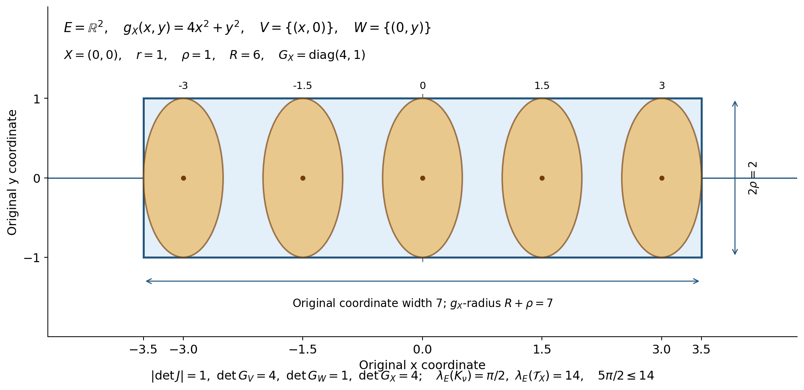

Quadratic Fourier multipliers at a moving scale
A quadratic Fourier multiplier spreads a localized function in directions set by its quadratic phase. The local Taylor polynomial and the tail require different estimates. This lesson proves both and combines them for symbols measured by a slowly varying metric.
Localizing symbols with moving metrics supplies the symbol class, partitions and bounded compactly supported approximation. Fourier transforms, finite spectra and convex separation supplies Fourier inversion, Plancherel, the real spectral theorem and convex separation, with the same transform convention. Basic references are [Hörmander 1979], [Hörmander III] and [Lerner 2005]; all estimates used below are proved in this lesson or those two prerequisite lessons.
1. The phase and its dual distance
Let \(E=\mathbb R^d\), with dual pairing \(\langle X,\Xi\rangle\). We use
\[ \widehat u(\Xi)=\int e^{-i\langle X,\Xi\rangle}u(X)\,dX,\qquad u(X)=(2\pi)^{-d}\int e^{i\langle X,\Xi\rangle}\widehat u(\Xi)\,d\Xi, \qquad D=-i\partial. \]Let \(A\) be any real quadratic form on \(E^*\). Its associated symmetric linear map \(B:E^*\to E\) is specified by \(A(\Xi)=\langle B\Xi,\Xi\rangle\); in particular \(A'(\Xi)=2B\Xi\). Define
\[ T_Au=\mathcal F^{-1}(e^{iA}\widehat u). \]Multiplication by \(e^{iA}\) preserves Schwartz space: every derivative of that function is a polynomial times it, so the product rule controls all Schwartz seminorms. Thus \(T_A\) acts on Schwartz functions, and by duality on tempered distributions. It commutes with constant-coefficient derivatives.
For a positive-definite quadratic form \(Q\) on \(E\), set
\[ Q^A(Z)=\sup_{\Xi:\,Q(B\Xi)<1}|\langle Z,\Xi\rangle|^2. \tag{G1} \]The value is \(+\infty\) unless \(Z\in\operatorname{ran}B\). Indeed, if \(Z\) does not annihilate \(\ker B\), a multiple of a kernel vector makes the numerator arbitrarily large with zero denominator. Conversely, on the quotient \(E^*/\ker B\), the form \(Q(B\Xi)\) is positive definite, so its dual is a finite positive-definite form on the annihilator \((\ker B)^\perp=\operatorname{ran}B\). This also proves that (G1), restricted to that range, is a quadratic form.
In coordinates in which \(Q\) is Euclidean and \(B\) is diagonal with eigenvalues \(\beta_j\),
\[ Q^A(Z)=\sum_{\beta_j\ne0}\frac{Z_j^2}{\beta_j^2} \quad\text{if }Z_j=0\text{ whenever }\beta_j=0. \tag{G2} \]Off that subspace it is infinite. Consequently
\[ h_Q=\sup_{\Xi\ne0}\frac{|A(\Xi)|}{Q^{-1}(\Xi)} =\max_j|\beta_j|, \qquad Q(Z)\leq h_Q^2Q^A(Z). \tag{G3} \]Equivalently \(h_Q^2=\sup_{Z\ne0}Q(Z)/Q^A(Z)\), where the ratio is zero off \(\operatorname{ran}B\). Formula (G2) proves this by maximizing on the eigen-directions with \(\beta_j\ne0\); when \(B=0\), every ratio in this convention is zero.
Here \(Q^{-1}\) is the ordinary dual quadratic form. If \(B=0\), take \(h_Q=0\); the inequality means \(Q(0)=0\) on the finite domain of \(Q^A\), with the off-domain case interpreted directly rather than as the undefined product \(0\cdot\infty\).
If \(Q_1\leq M Q_2\), their phase-dual forms obey \(Q_1^A\geq M^{-1}Q_2^A\), because the defining ellipsoid for the first supremum contains a suitable dilation of the ellipsoid for the second. Both are infinite off the same range, and the assertion on that range is the usual reversal of positive quadratic forms.
2. A Taylor estimate for the local multiplier
Theorem 2.1 (uniform Taylor estimate). Let \(K=\{X:Q(X)<1\}\), \(u\in C_c^\infty(K)\), and let \(s\) be an integer with \(s>d/2\). For every integer \(N\geq0\),
\[ \sup_X\left|T_Au(X)-\sum_{j<N}\frac{(iA(D))^ju(X)}{j!}\right| \leq \frac{C_{d,s}}{N!} \max_{0\leq j\leq s}\sup_{Y\in K}|A(D)^Nu|_{j,Q}(Y). \tag{G4} \]The constant is independent of \(A\) and \(Q\); for \(N=0\) the sum is empty.
Proof. Make a linear change of variables that sends \(Q\) to the Euclidean metric. The Fourier Jacobian and inverse-transform Jacobian cancel, so it suffices to prove the same estimate on the Euclidean unit ball. For real \(t\), Taylor's integral remainder gives
\[ \left|e^{it}-\sum_{j<N}(it)^j/j!\right|\leq |t|^N/N!. \]For \(N=0\) this is simply \(|e^{it}|=1\). Fourier inversion therefore bounds the left side of (G4) by \((2\pi)^{-d}\|\widehat{A(D)^Nu}\|_{L^1}/N!\). For any smooth \(v\) supported in the unit ball, Cauchy–Schwarz gives
\[ \|\widehat v\|_{L^1} \leq \left(\int\langle\Xi\rangle^{-2s}\,d\Xi\right)^{1/2} \|\langle\Xi\rangle^s\widehat v\|_{L^2} \leq C_{d,s}\sum_{|\alpha|\leq s}\|\partial^\alpha v\|_{L^2}. \]The integral is finite exactly for \(s>d/2\). Plancherel proves the last estimate, and the fixed volume of the support bounds the \(L^2\) norms by derivative suprema. This proves (G4), including its uniformity. ∎ Editorial calculation in the original coordinates. Here are all the Jacobian, derivative and norm factors in that comparison. The given form remains \(Q(X)=X^{\mathsf T}GX\), with the original positive matrix \(G\), original measure \(dX\), phase \(A\) and function \(u\). Choose an invertible comparison map \(L\) with \(L^{\mathsf T}GL=I_d\), by the finite Gram construction in Polynomial and contour tools. Put \(J=|\det L|\), so \(J^2\det G=1\) and \(G^{-1}=LL^{\mathsf T}\). Define the auxiliary pullbacks \(u_L(y)=u(Ly)\) and \(A_L(\eta)=A(L^{-\mathsf T}\eta)\); these are comparison maps, and do not replace the original working objects. The full affine change of measure gives
\[ \widehat u(\Xi)=J\widehat{u_L}(L^{\mathsf T}\Xi),\quad d\Xi=J^{-1}d\eta\ (\eta=L^{\mathsf T}\Xi),\quad A_L(\eta)=\langle L^{-1}BL^{-\mathsf T}\eta,\eta\rangle. \tag{GJ1} \]Consequently the complete comparison of the actual Fourier operators is
\[ (T_Au)(Ly)=(2\pi)^{-d}\int e^{i\langle y,\eta\rangle} e^{iA(L^{-\mathsf T}\eta)}J\widehat{u_L}(\eta)J^{-1}\,d\eta =(T_{A_L}u_L)(y). \tag{GJ2} \]Both Jacobians and the original inverse coefficient are displayed. The chain rule gives \(D_y=L^{\mathsf T}D_X\) on pullbacks, hence \(A_L(D_y)u_L=(A(D_X)u)_L\) and the same identity for every recursively applied power. Write \(v=A(D_X)^Nu\), \(v_L=v\circ L\), and let \(T_j\) be the actual columns of \(L\). They satisfy \(Q(T_j)=1\). Every mixed derivative \(\partial_y^\alpha v_L\) is the pullback of the ordered original directional derivative \(\partial_{T_1}^{\alpha_1}\cdots\partial_{T_d}^{\alpha_d}v\), with all its factors retained.
For the integer \(s>d/2\), put \(I_{d,s}=\int_{\mathbb R^d}(1+|\eta|^2)^{-s}\,d\eta\), and \(c_{s,\alpha}=s!/(\alpha!(s-|\alpha|)!)\) for \(|\alpha|\leq s\). The complete multinomial identity is \((1+|\eta|^2)^s=\sum_{|\alpha|\leq s}c_{s,\alpha}\eta^{2\alpha}\). Its coefficient sum is \((1+d)^s\). The integral is finite: on \(|\eta|\leq1\) the integrand is at most one; on \(2^k<|\eta|\leq2^{k+1}\) it is at most \(2^{-2sk}\), and the volume is at most \(\omega_d2^{d(k+1)}\). The resulting geometric series converges because \(2s>d\). Plancherel with the original factor \((2\pi)^d\) and both affine measures now gives
\[ \begin{aligned} \int(1+Q^{-1}(\Xi))^{-s}\,d\Xi&=J^{-1}I_{d,s},\\ \int(1+Q^{-1}(\Xi))^s|\widehat v(\Xi)|^2\,d\Xi &=J\int(1+|\eta|^2)^s|\widehat{v_L}(\eta)|^2\,d\eta\\ &=J(2\pi)^d\sum_{|\alpha|\leq s}c_{s,\alpha} \|\partial_y^\alpha v_L\|_{L^2(dy)}^2\\ &=JJ^{-1}(2\pi)^d\sum_{|\alpha|\leq s}c_{s,\alpha} \|\partial_{T_1}^{\alpha_1}\cdots\partial_{T_d}^{\alpha_d}v\|_{L^2(dX)}^2. \end{aligned} \tag{GJ3} \]Here \(Q^{-1}(\Xi)=|L^{\mathsf T}\Xi|^2\). The original support has volume \(\lambda_E(K)=J\omega_d\), by the same affine law. If \(P=\max_{0\leq j\leq s}\sup_K|v|_{j,Q}\), each directional norm squared in (GJ3) is at most \(J\omega_dP^2\). Cauchy--Schwarz in the original frequency variable and the original Taylor bound therefore give
\[ \begin{aligned} \sup_X\left|T_Au(X)-\sum_{j<N}(iA(D_X))^ju(X)/j!\right| &\leq\frac{(2\pi)^{-d}}{N!}\|\widehat v\|_{L^1(d\Xi)}\\ &\leq\frac{(2\pi)^{-d}}{N!} (J^{-1}I_{d,s})^{1/2} \bigl(JJ^{-1}(2\pi)^dJ\omega_d(1+d)^sP^2\bigr)^{1/2}\\ &=\frac{(2\pi)^{-d/2}}{N!} \bigl(I_{d,s}\omega_d(1+d)^s\bigr)^{1/2}P. \end{aligned} \tag{GJ4} \]Thus (G4) holds for the original form and measure with this explicit constant; no determinant or inverse-transform factor was omitted. The two directions of the pullback comparison are the inverse maps \(X=Ly\) and \(y=L^{-1}X\), and preserve precisely the full support and the displayed derivative identities. In dimension zero take the sole-point measure, determinant and \(\omega_0\) to be one. The phase and \(B\) are zero, \(h_Q=0\) is assigned directly, \(T_A=I\), and the Taylor remainder is zero for \(N\geq1\) and the identity for \(N=0\); no empty spectral maximum or undefined zero-times-infinity product is used.
The same reasoning at a fixed support radius \(a>0\) gives a constant depending also on \(a\). Combining (G3) with diagonalization yields the useful consequence
\[ \|T_Au-\sum_{j<N}(iA(D))^ju/j!\|_\infty \leq C_{d,s,N,a}\,h_Q^N \max_{j\leq s+2N}\sup|u|_{j,Q},\qquad \operatorname{supp}u\subset\{Q<a^2\}. \tag{G5} \]To see the coefficient bound explicitly, in orthonormal eigen-coordinates \(A(D)=\sum_j\beta_jD_j^2\). Expanding its \(N\)-th power has the sum of absolute coefficients bounded by \((\sum_j|\beta_j|)^N\leq d^Nh_Q^N\). Applying at most \(s\) further derivatives gives (G5).
3. Repeated integration by parts away from support
Lemma 3.1 (affine reciprocal). Let \(L\) be real affine and nonzero on \(\{Q<R^2\}\), with \(R>1\). Then for \(Y\in K\) and every integer \(k\geq0\),
\[ |L(0)/L|_{k,Q}(Y)\leq k!R(R-1)^{-k-1}. \tag{G6} \]Proof. The assumption implies \(L(0)\ne0\). In \(Q\)-orthonormal coordinates, write \(L(Y)/L(0)=1-\ell\cdot Y\). Its zero hyperplane misses the open ball of radius \(R\), so \(|\ell|\leq R^{-1}\). Direct differentiation gives
\[ \partial_{T_1}\cdots\partial_{T_k}(1-\ell\cdot Y)^{-1} =k!\frac{\prod_j(\ell\cdot T_j)}{(1-\ell\cdot Y)^{k+1}}. \]For unit directions and \(|Y|<1\), its absolute value is at most \(k!R^{-k}(1-R^{-1})^{-k-1}\), which is (G6). ∎
For affine \(L\), the Fourier multiplication/derivative identities give the exact commutator
\[ [T_A,L]=T_A\langle A'(D),L'\rangle. \tag{G7} \]For example, Fourier transforming multiplication by \(X_j\) gives \(i\partial_{\Xi_j}\); subtracting in the order \(T_AX_j-X_jT_A\) leaves \(A'_{\Xi_j}e^{iA}\), confirming the sign in (G7). Constant terms commute.
Fix an observation point \(X\), choose \(\eta\in E^*\), and put \(L(Y)=\langle Y-X,\eta\rangle\). If it is nonzero on a neighborhood of \(\operatorname{supp}u\), the function \(L^{-1}u\), extended by zero, is smooth and compactly supported. Evaluating (G7) at \(X\), where \(L(X)=0\), gives
\[ T_Au(X)=2T_A\big(\langle B\eta,D\rangle(L^{-1}u)\big)(X). \tag{G8} \]In the following estimate, assume in addition that \(L\ne0\) throughout \(\{Q<R^2\}\) for a fixed \(R>1\). Iteration preserves the support. Using (G6), the product rule and the fact that a directional derivative along \(B\eta\) costs \(Q(B\eta)^{1/2}\), induction proves
\[ |T_Au(X)| \leq C_{k,R,d,s} \left(\frac{Q(B\eta)^{1/2}}{|L(0)|}\right)^k \max_{j\leq s+k}\sup_{Y\in K}|u|_{j,Q}(Y). \tag{G9} \]For the induction, define \(Vv=\langle B\eta,D\rangle(L^{-1}v)\). Formula (G6) bounds derivatives of \(L^{-1}\) by a constant divided by \(|L(0)|\); therefore \(\max_{j\leq l}|Vv|_{j,Q}\leq C_{l,R}Q(B\eta)^{1/2}|L(0)|^{-1}\max_{j\leq l+1}|v|_{j,Q}\). Apply this \(k\) times and then (G4) with \(N=0\) to \(V^ku\). This proves (G9) with no assumption that \(A\) is invertible or definite.
4. Decay at phase distance
Theorem 4.1 (off-support decay). Under the hypotheses of Theorem 2.1, for \(R>1\) and \(k\geq0\),
\[ |T_Au(X)|\leq C_{k,R,d,s} \left(1+\inf_{Y\in RK}Q^A(X-Y)\right)^{-k/2} \max_{j\leq s+k}\sup_K|u|_{j,Q}. \tag{G10} \]For \(k>0\), an infinite infimum makes the right side zero. For \(k=0\), the factor is defined to be one.
Proof. Denote the square root of the infimum by \(d_A\). The open unit ball of \(Q^A\) is a bounded convex ellipsoid inside \(\operatorname{ran}B\), and its support function at \(\eta\) is \(Q(B\eta)^{1/2}\), by duality on the quotient used in (G1). The support function of \(RK\) is \(R Q^{-1}(\eta)^{1/2}\).
Choose \(0<a<d_A\). The point \(X\) is outside the open convex set \(RK+\{Z:Q^A(Z)<a^2\}\). Separation supplies a nonzero \(\eta\), with orientation chosen so that
\[ \langle X,\eta\rangle \geq RQ^{-1}(\eta)^{1/2}+aQ(B\eta)^{1/2}. \tag{G11} \]This separation statement also applies when the second ellipsoid is lower dimensional, since \(RK\) makes the sum open in \(E\). Formula (G11) shows that \(L(Y)=\langle Y-X,\eta\rangle\) has no zero in \(RK\), and \(Q(B\eta)^{1/2}/|L(0)|\leq a^{-1}\). If \(Q(B\eta)=0\), (G8) already gives \(T_Au(X)=0\), so no division by it is needed. Otherwise (G9) bounds the left side by \(C a^{-k}\) times the indicated derivative norm.
Let \(a\) tend to \(d_A\). When \(d_A=\infty\), let \(a\) tend to infinity, obtaining zero for \(k>0\). For \(d_A\leq1\), use the global estimate (G4) with \(N=0\). Combining that bound with the one for \(d_A>1\) changes the constant by at most \(2^{k/2}\) and proves (G10). ∎
Translations and fixed rescalings of \(K\) give the same estimate for a function supported in \(B_Z(a)\), with its tail measured from a larger ball \(B_Z(b)\), \(0<a<b\). Constants depend on the two radii and their gap. Applying (G10) to a derivative gives the corresponding differentiated estimate, since \(T_A\) commutes with that derivative.
5. Weights measured from the observation point
Let \(g\) be slowly varying and let \(m\) be a positive \(g\)-continuous weight in the sense of Localizing symbols with moving metrics. Fix an observation point \(X\). The required additional assumptions are
\[ g_X\leq g_X^A, \tag{G12} \] \[ g_Y(T)\leq C\,g_X(T)(1+g_Y^A(X-Y))^{N_g},\qquad m(Y)\leq C\,m(X)(1+g_Y^A(X-Y))^{N_m}. \tag{G13} \]These hold for every \(Y,T\), with fixed finite exponents \(N_g,N_m\geq0\) and positive constants. This normalization loses no generality: any valid negative exponent can be enlarged to zero because the base \(1+g_Y^A(X-Y)\) is at least one. They are conditions at \(X\); at this stage no such estimate is assumed at another observation point. In particular the phase-dual form on the right is based at \(Y\). Infinite values impose no comparison across the corresponding directions; the inequalities are required on their finite-distance domain.
Reversal of quadratic forms, as in Section 1, gives
\[ g_X^A(T)\leq C\,g_Y^A(T)(1+g_Y^A(X-Y))^{N_g}; \]applying this to \(T=X-Y\) yields
\[ 1+g_X^A(X-Y)\leq C'(1+g_Y^A(X-Y))^{N_g+1}. \tag{G14} \]All useful estimates here are on the common finite domain \(\operatorname{ran}B\); elsewhere the extended-valued inequality has its evident meaning. If \(B\) is invertible, dualizing once more shows the equivalence of the metric condition in (G13) and the displayed phase-dual comparison. We make no such equivalence claim for a degenerate \(B\), since a restriction to \(\operatorname{ran}B\) need not determine a quadratic form on all of \(E\).
Write \(h(Y)=h_{g_Y}\), using (G3). When \(A\ne0\), \(h\) is positive. It is \(g\)-continuous because comparable metrics give comparable \(h\)'s. More precisely, if \(g_Y\leq M g_X\), then \(g_Y^{-1}\geq M^{-1}g_X^{-1}\), and the first formula in (G3) gives \(h(Y)\leq Mh(X)\). Thus (G13) implies
\[ h(Y)\leq C h(X)(1+g_Y^A(X-Y))^{N_g}. \tag{G15} \]This argument does not differentiate the possibly nonsmooth metric. Assumption (G12) says \(h(X)\leq1\).
6. How many localization balls are near?
Choose a partition \((\phi_\nu)\) from Localizing symbols with moving metrics, with support balls \(B_{X_\nu}(a)\), and choose fixed larger radii \(0<a<b<c<r_*\). Write \(U_\nu=B_{X_\nu}(b)\) and \(U'_\nu=B_{X_\nu}(c)\). These three families have uniformly bounded multiplicity and are locally finite. Set
\[ d_\nu(X)=\inf_{Y\in U_\nu}g_{X_\nu}^A(X-Y). \tag{G16} \]Lemma 6.1 (counting balls). Under (G12) and the metric part of (G13), there are constants \(C,L\), depending only on dimension, the three radii and metric structural constants, for which
\[ \#\{\nu:d_\nu(X)\leq t\}\leq Ct^L\quad(t\geq1). \tag{G17} \]Consequently \(\sum_\nu(1+d_\nu(X))^{-M}\leq C_M\) for any \(M>L\), uniformly when the structural constants are uniform. Terms with \(d_\nu=\infty\) are zero.
Proof. Use linear coordinates in which \(g_X\) is Euclidean. For each index being counted choose \(Y_\nu\in U_\nu\) with \(g_{X_\nu}^A(X-Y_\nu)\leq2t\); using \(2t\) avoids any need for attainment. Slow variation compares \(g_{Y_\nu}\) with \(g_{X_\nu}\), hence also their phase-dual forms. Thus \(g_{Y_\nu}^A(X-Y_\nu)\leq C_1t\). Equations (G13)–(G14) and (G12) now imply
\[ g_{X_\nu}\leq C_2t^{N_g}g_X,\qquad g_X(X-Y_\nu)\leq C_3t^{N_g+1}. \tag{G18} \]Every Euclidean ball centered at \(Y_\nu\) of radius \(\kappa t^{-N_g/2}\), with a sufficiently small structural \(\kappa>0\), lies in \(U'_\nu\): its \(g_{X_\nu}\)-radius is less than the gap \(c-b\). These balls have the bounded multiplicity of the \(U'_\nu\)'s. Their centers, by (G18), lie in a Euclidean ball of radius \(C_4t^{(N_g+1)/2}\), and the small balls lie in a fixed constant enlargement of it. Integrating their characteristic functions and dividing by their common volume gives
\[ \#\{\nu:d_\nu(X)\leq t\} \leq C_5t^{d(2N_g+1)/2}. \]This argument first applies to any finite subcollection and therefore also bounds the entire set. It proves (G17) with \(L=d(2N_g+1)/2\). Split indices into \(d_\nu\leq1\) and the dyadic bands \(2^j<d_\nu\leq2^{j+1}\). The band contribution is at most \(C2^{(j+1)L}2^{-jM}\); the resulting geometric series converges for \(M>L\). ∎
Counting along the original phase range
The ambient-dimensional count above remains valid. There is also a stronger count which uses the rank of the original phase map and keeps the original metric and volume. Put \(V=\operatorname{ran}B\) and \(r=\dim V\). Retain the original \(E=\mathbb R^d\), coordinate measure \(dX\), quadratic phase \(A(\Xi)=\langle B\Xi,\Xi\rangle\), localization sets and metric \(g_X\). This argument does not replace any of them. Write \(\mu\) for the overlap bound of the original larger sets \(U'_\nu\). In Lemma 6.1 take \(h_*=1\); the following proof also allows the original comparison \(g_X\leq h_*^2g_X^A\) on its finite domain for any fixed \(0<h_*<\infty\), as in (G24).
Fix \(t\geq1\) and a finite collection of indices with \(d_\nu(X)\leq t\). Select the same near-minimizers \(Y_\nu\in U_\nu\) used in (G18). Their phase distance is finite. The exact finite domain proved in (G1), for every positive-definite form, therefore gives
\[ Y_\nu-X\in V,\qquad g_{X_\nu}\leq C_2t^{N_g}g_X,\qquad g_X(Y_\nu-X)\leq C_3h_*^2t^{N_g+1}. \tag{GR1} \]The first form estimate is the original first estimate in (G18). For the last one, (G14) bounds the original \(g_X^A(X-Y_\nu)\) by a structural multiple of \(t^{N_g+1}\); the actual factor \(h_*^2\) is then supplied by the comparison of \(g_X\) with \(g_X^A\). Enlarge the same structural \(C_4\) if necessary so that \(C_4^2\geq C_3\), and choose the original structural \(\kappa>0\) with \(\sqrt{C_2}\kappa<c-b\). Put
\[ \rho=\kappa t^{-N_g/2},\qquad R=C_4h_*t^{(N_g+1)/2},\qquad K_\nu=\{Z:g_X(Z-Y_\nu)<\rho^2\}. \tag{GR2} \]For \(Z\in K_\nu\), (GR1) gives \(g_{X_\nu}(Z-Y_\nu)^{1/2}<\sqrt{C_2}\kappa\). The triangle inequality for the original positive form and \(Y_\nu\in U_\nu\) give \(g_{X_\nu}(Z-X_\nu)^{1/2}<b+\sqrt{C_2}\kappa<c\). Thus \(K_\nu\subset U'_\nu\), and their indicator sum is at most \(\mu\). Every center belongs to the original affine subspace \(X+V\) and has \(g_X\)-distance at most \(R\) from \(X\).
Use the bilinear form obtained by polarizing the original \(g_X\), and let \(W=V^{\perp_{g_X}}\). There is an exact direct sum \(E=V\oplus W\): in a basis of \(V\), its positive Gram matrix determines the unique projection of any vector onto \(V\), and subtracting that projection gives its orthogonal component. The two projection maps satisfy
\[ Z-X=v+w,\quad v\in V,\ w\in W, \qquad g_X(Z-X)=g_X(v)+g_X(w). \tag{GR3} \]Both projection norms are therefore at most the original norm. Project \(Z-Y_\nu\) for \(Z\in K_\nu\). The parallel component has norm less than \(\rho\), while the perpendicular component has the same bound. Adding the center only changes the parallel component. Consequently the whole union of the original ellipsoids lies in
\[ \mathcal T_X=\{X+v+w:v\in V, w\in W, g_X(v)<(R+\rho)^2, g_X(w)<\rho^2\}. \tag{GR4} \]Here is its volume with every original matrix factor retained. Let \(G_X\) be the positive matrix of \(g_X\) in the original coordinates. Choose any basis matrices \(C\) of \(V\) and \(D\) of \(W\), and write \(J=[C\ D]\), \(G_V=C^{\mathsf T}G_XC\), \(G_W=D^{\mathsf T}G_XD\). Orthogonality gives the exact full matrix and determinant identities
\[ J^{\mathsf T}G_XJ= \begin{pmatrix}G_V&0\\0&G_W\end{pmatrix}, \qquad (\det J)^2\det G_X=\det G_V\det G_W. \tag{GR5} \]The coordinate map \((u,z)\mapsto X+Cu+Dz\) has Jacobian \(|\det J|\). The finite-coordinate ellipsoid volume formula follows with every original factor from Metric and topological foundations, Section 6 and Polynomial and contour tools, Sections 10.4--10.5 and 10.10. For any original positive \(m\)-dimensional Gram matrix \(H\), those finite Gram residuals give an invertible comparison map \(L_H\) satisfying \(L_H^{\mathsf T}HL_H=I_m\). Taking its complete determinant and applying the original affine-volume law gives
\[ (\det L_H)^2\det H=1,\qquad \{u:u^{\mathsf T}Hu<s^2\}=L_H\{v:|v|<s\},\qquad \lambda_m\{u:u^{\mathsf T}Hu<s^2\} =|\det L_H|\omega_m s^m =\frac{\omega_m s^m}{\sqrt{\det H}}. \tag{GR6a} \]Here \(s>0\), and \(\omega_j\) is the volume of the Euclidean unit ball in dimension \(j\), with \(\omega_0=1\). The map is used to prove the comparison; every receiving ellipsoid still has its original Gram matrix. A zero-dimensional determinant and its sole-point measure are one. Apply (GR6a) to the three original matrices and the product-measure theorem proved in Banach estimates, quotient spaces and compact parameter arguments. Then
\[ \begin{aligned} \lambda_E(K_\nu)&=\frac{\omega_d\rho^d}{\sqrt{\det G_X}},\\ \lambda_E(\mathcal T_X) &=|\det J|\, \frac{\omega_r(R+\rho)^r}{\sqrt{\det G_V}} \frac{\omega_{d-r}\rho^{d-r}}{\sqrt{\det G_W}}\\ &=\frac{\omega_r\omega_{d-r}(R+\rho)^r\rho^{d-r}} {\sqrt{\det G_X}}. \end{aligned} \tag{GR6} \]The second equality uses (GR5); the Jacobian and both Gram determinants have first been displayed. The original matrix \(G_X\) remains in both ambient-volume formulas. For a finite index collection \(I\), integrate its indicator sum, use the actual overlap bound and (GR4), and obtain
\[ |I|\frac{\omega_d\rho^d}{\sqrt{\det G_X}} \leq\mu\lambda_E(\mathcal T_X) =\mu\frac{\omega_r\omega_{d-r}(R+\rho)^r\rho^{d-r}} {\sqrt{\det G_X}}. \tag{GR7} \]Dividing the two positive ambient volumes cancels exactly the common original \(\sqrt{\det G_X}\) factor. It gives
\[ \begin{aligned} |I|&\leq\mu\frac{\omega_r\omega_{d-r}}{\omega_d} \left(1+\frac{C_4h_*}{\kappa} t^{(2N_g+1)/2}\right)^r\\ &\leq K_r t^{L_r},\qquad K_r=\mu\frac{\omega_r\omega_{d-r}}{\omega_d} \left(1+\frac{C_4h_*}{\kappa}\right)^r, \qquad L_r=\frac{r(2N_g+1)}2. \end{aligned} \tag{GR8} \]The last step uses \(t\geq1\) and the original \(N_g\geq0\). The bound holds for every finite collection; if the full counted set had more indices than its finite bound, a finite subset of that size would contradict (GR8). Thus it bounds the full set without assuming that an infimum is attained. When \(r=0\), every selected center equals \(X\), so all selected original larger sets contain \(X\) and the count is directly at most \(\mu\). Formula (GR8) agrees with this, using \(\omega_0=1\) and \(L_0=0\). When \(r=d\), \(W=\{0\}\), and the product measure has its zero-dimensional factor one; the bound recovers the original ambient exponent. The zero phase still has the exact identity action stated after (G22).

The displayed finite configuration has \(d=2\), \(A(\Xi)=\Xi_1^2\), \(B=\operatorname{diag}(1,0)\), \(g_X(x,y)=4x^2+y^2\), \(X=(0,0)\), \(\rho=1\), \(R=6\), and centers \((-3,0),(-1.5,0),(0,0),(1.5,0),(3,0)\). The original metric balls have coordinate semiaxes \(1/2\) and \(1\); they are disjoint, so their actual overlap is one. Their tube is \([-3.5,3.5]\times[-1,1]\). Its coordinate measure is \(14\), while each ball has measure \(\pi/2\). The original coordinate basis gives \(|\det J|=1\), \(\det G_V=4\), \(\det G_W=1\), \(\det G_X=4\). The unit disk lies in a square of area four, so \(\pi\leq4\) and \(5\pi/2\leq10\leq14\), as required by (GR7). This is an exact chosen configuration for (GR3)--(GR8), rather than a claim to display every localization family. The full general proof is above; the affine-volume and Gram sources are the precise internal sections cited at (GR6a). Its editable figure source retains all coordinates and parameters.
The summation and all its actual receivers can now use \(L_r\) instead of \(L\). For \(M>L_r\), separate \(d_\nu\leq1\) from \(2^j<d_\nu\leq2^{j+1}\), \(j\geq0\). Infinite-distance terms remain exactly zero. The full geometric sum yields
\[ \sum_\nu(1+d_\nu(X))^{-M} \leq K_r+K_r\sum_{j\geq0}2^{(j+1)L_r-jM} =K_r\left(1+\frac{2^{L_r}}{1-2^{L_r-M}}\right). \tag{GR9} \]In (G20), pointwise extension therefore permits any integer \(k\) with \(k/2-N_m>L_r\). For \(l\) directional derivatives, the exact modified weight already used in (G21) has exponent \(N_m+lN_g/2\); it suffices that \(k>2N_m+lN_g+r(2N_g+1)\). The scalar \(N\)-th far remainder in Section 8 retains its complete exponent \(-k/2+N_m+N(N_g+1/2)\). Applying it to that same derivative weight gives the sufficient choice
\[ k>2N_m+lN_g+2N(N_g+1/2)+r(2N_g+1). \tag{GR10} \]No estimate of the original near-support derivatives is removed. Its ambient Sobolev integer still satisfies \(s>d/2\), and the near part requires input derivatives through \(l+s+2N\); the far part requires them through \(l+s+k\). Thus the original bound (G22), or (G26) for finite \(h_*\), holds with a sufficient upper input order \(l+s+\max(2N,k)\). Every original \(h(X)^N\), metric-direction factor, localization constant and bounded-approximation argument remains. Uniform structural constants on \(E_0\) make (GR8)--(GR9) uniform there, so the existing derivative-limit and weak-continuity proofs apply to these same absolutely summable tails. In Problem 3 the scalar choice becomes \(k>5r+26\), while the near order is still \(s+8\). This is a proved consequence of the original phase-range and localization formulas; it preserves the earlier ambient-dimensional result.
7. Pointwise extension and derivative control
Theorem 7.1 (pointwise extension). Under (G12)–(G13), the map \(u\mapsto T_Au(X)\) on \(C_c^\infty(E)\) has a unique continuous extension to \(S(m,g)\) which is continuous on each bounded subset when that subset is given the \(C^\infty_{\rm loc}\) topology. For some finite \(J\),
\[ |T_Au(X)|\leq C m(X)p_{\leq J}(u;m,g). \tag{G19} \]The constants and \(J\) depend only on the metric/weight structural constants and dimension.
Proof. Put \(u_\nu=\phi_\nu u\). The localization estimate of Localizing symbols with moving metrics and (G10), with the gap between the support radius \(a\) and \(b\), give
\[ |T_Au_\nu(X)| \leq C_k m(X_\nu)p_{\leq s+k}(u;m,g) (1+d_\nu(X))^{-k/2}. \tag{G20} \]For finite \(d_\nu\), choose a point nearly attaining (G16). Local comparison and the weight part of (G13) give \(m(X_\nu)\leq C m(X)(1+d_\nu(X))^{N_m}\), with a harmless change of constant. For infinite \(d_\nu\), (G10) makes the left side of (G20) zero. Choose \(k\) so that \(k/2-N_m>L\), where \(L\) comes from (G17). The series \(\sum_\nu T_Au_\nu(X)\) converges absolutely and gives (G19).
Its majorant is uniform for \(u\) in a bounded set of \(S(m,g)\). Each finite partial sum is continuous in \(C^\infty_{\rm loc}\), since each \(\phi_\nu u\) has fixed compact support and (G4) gives a finite derivative bound for its image at \(X\). Uniform convergence of these continuous functions on the bounded set proves the stated continuity. If \(u\) has compact support, the partition sum is finite and agrees with the original \(T_Au(X)\). Finally, the bounded compactly supported approximation in Approximation on compact sets shows uniqueness: any extension with this bounded-set continuity must take the limit of the same compactly supported partial sums. This also proves independence of the chosen partition. ∎
This bounded-set continuity is called weak continuity in this course's symbol estimates. It is stronger than merely specifying a continuous functional on the Fréchet symbol space: compactly supported functions need not be dense in that Fréchet topology.
For fixed directions \(T_1,\ldots,T_l\), let \(m_T(Y)=m(Y)\prod_jg_Y(T_j)^{1/2}\). If a direction is zero the derivative statement below is trivial; otherwise \(m_T\) is positive and satisfies local continuity and the weight condition (G13), with exponent \(N_m+lN_g/2\). The function \(v=\partial_{T_1}\cdots\partial_{T_l}u\) obeys \(p_j(v;m_T,g)\leq p_{j+l}(u;m,g)\). Using (G19) for \(v\) and commuting derivatives first gives the following estimate for compactly supported \(u\):
\[ |\partial_{T_1}\cdots\partial_{T_l}T_Au(X)| \leq C_lm(X)\prod_jg_X(T_j)^{1/2} p_{l\leq j\leq J_l}(u;m,g). \tag{G21} \]The notation on the right means the maximum of exactly that finite range of seminorms. No lower derivative seminorm is needed.
For a general symbol at a single distinguished observation point, the left side of (G21) denotes the jet value defined by \(T_A(\partial_{T_1}\cdots\partial_{T_l}u)(X)\). No derivative of a function defined only at one point is asserted. Actual tangential derivatives are identified under the uniform subspace hypotheses in the next paragraph.
If the hypotheses hold uniformly for \(X\) in a linear subspace \(E_0\), these formulas define a smooth restriction \(T_Au|_{E_0}\) in \(S(m|_{E_0},g|_{TE_0})\). Here is a justification of smoothness, which is not implicit in pointwise extension. Bounded compactly supported approximants to \(u\) have, by (G21), locally uniformly bounded derivatives of every order on \(E_0\), and each derivative has a pointwise limit by the scalar extension argument. On a compact coordinate box, one additional derivative gives equicontinuity; a finite grid then upgrades pointwise convergence to uniform convergence. The fundamental theorem of calculus identifies the limits as derivatives of one smooth function, successively in every order. Thus the restriction has (G21). The same bounded-derivative argument applied to a convergent net or sequence on a bounded source set proves weak continuity of the restriction. On these bounded sets the usual \(C^\infty_{\rm loc}\) topology is metrizable, so sequential continuity suffices.
8. The remainder with a small parameter
Theorem 8.1 (global Taylor remainder). Assume (G12)–(G13) uniformly on a linear subspace \(E_0\), and suppose \(A\ne0\). For every integer \(N\geq0\), define
\[ R_Nu=T_Au-\sum_{j<N}(iA(D))^ju/j!. \]Then \(R_N:S(m,g)\to S(mh^N,g)|_{E_0}\) is weakly continuous. For every \(l\), some finite \(J_{N,l}\) satisfies
\[ |\partial_{T_1}\cdots\partial_{T_l}R_Nu(X)| \leq C_{N,l}m(X)h(X)^N \prod_jg_X(T_j)^{1/2}p_{\leq J_{N,l}}(u;m,g),\quad X\in E_0. \tag{G22} \]Only dimension, \(N,l\) and the structural metric/weight constants determine the seminorm and estimate. If \(A=0\), then \(R_N=0\) for \(N\geq1\) and \(R_0\) is the identity restriction; this case is stated directly, without treating a zero function as a positive weight.
Proof. It suffices initially to consider compactly supported \(u\) and \(l=0\). Use the partition from Section 6. At a fixed \(X\), only a bounded number of indices have \(X\in U'_\nu\). For these near indices, slow variation compares \(g_{X_\nu}\) with \(g_X\), the weights with \(m(X)\), and \(h(X_\nu)\) with \(h(X)\). Applying (G5) to \(u_\nu\) in the frozen metric yields
\[ |R_Nu_\nu(X)|\leq C_Nm(X)h(X)^Np_{\leq s+2N}(u;m,g). \]Their sum has the same bound with a structural multiplicity factor.
For a far index \(X\notin U'_\nu\), every \(Y\in U_\nu\) satisfies \(g_{X_\nu}(X-Y)^{1/2}\geq c-b\). Slow variation between \(Y\) and \(X_\nu\) implies \(g_Y(X-Y)\geq c_0>0\). If \(g_Y^A(X-Y)\) is finite, (G3) and (G15) give
\[ c_0\leq h(Y)^2g_Y^A(X-Y) \leq C h(X)^2(1+g_Y^A(X-Y))^{2N_g+1}. \]Choose \(Y\) nearly attaining (G16) and compare its metric with the center metric. For finite \(d_\nu(X)\) this proves
\[ 1\leq C h(X)(1+d_\nu(X))^{N_g+1/2}. \tag{G23} \]Terms with infinite \(d_\nu\) are zero in (G20). Since \(u_\nu\) vanishes on a neighborhood of \(X\) for every far index, all Taylor-polynomial terms vanish there, and \(R_Nu_\nu(X)=T_Au_\nu(X)\). Multiply the bound (G20) by the \(N\)-th power of (G23), using the right side to bound one from above. After weight comparison it becomes
\[ |R_Nu_\nu(X)| \leq C m(X)h(X)^Np_{\leq s+k}(u;m,g) (1+d_\nu(X))^{-k/2+N_m+N(N_g+1/2)}. \]Choose \(k\) so that the negative exponent exceeds the counting exponent \(L\). Summation by Lemma 6.1 proves (G22) for \(l=0\). Notice that the gain was extracted from the fixed separation of the far support, not from an unproved asymptotic summation theorem.
For derivatives, apply this scalar estimate to \(v=\partial_{T_1}\cdots\partial_{T_l}u\) and the modified weight \(m_T\) used in (G21). The operator \(R_N\) commutes with those derivatives. The modified weight has controlled structural constants, so this gives (G22) for arbitrary \(l\), uniformly in the directions.
Finally, \(h\) is positive, locally \(g\)-continuous, and satisfies (G15), so \(mh^N\) is an allowed target weight on \(E_0\). The continuous differential part of \(R_N\) is already defined on symbols. The weak extension of \(T_A\) from Theorem 7.1, bounded approximation, and (G22) extend the identity and estimate to every \(u\in S(m,g)\). The locally bounded derivative argument there proves smoothness and weak continuity in the target symbol class. ∎
No conclusion here requires \(h(X)\to0\). If \(h=1\) on a region, the remainder belongs to the same weight class there and the theorem gives no decreasing-order filtration on that region. This is a quantitative Taylor theorem for one operator, not a construction that sums every prescribed formal sequence of symbols.
A finite bound suffices without changing the metric
The bound one in (G12) is stronger than this proof needs. Retain the same phase, metric, weight, observation subspace and phase-dual form. Suppose \(A\ne0\), retain (G13) uniformly on \(E_0\), and replace (G12) by
\[ g_X(T)\leq h_*^2g_X^A(T),\qquad X\in E_0,\qquad 0<h_*<\infty. \tag{G24} \]As before, this comparison is required on the finite domain of the phase-dual form. Every assertion of Theorems 7.1 and 8.1 still holds, with constants also depending on \(h_*\). No metric or symbol is replaced by a rescaled one.
Here is the complete change in the proof. Equation (G3) identifies (G24) with \(h(X)\leq h_*\). In the counting proof, the first estimate in (G18) is unchanged. Its second estimate becomes \(g_X(X-Y_\nu)\leq C_3h_*^2t^{N_g+1}\), by (G14) and (G24). The small Euclidean balls still have radius \(\kappa t^{-N_g/2}\), with the same structural \(\kappa\), and lie in the same larger localization balls. Their union now lies in a Euclidean ball of radius \((C_4h_*+\kappa)t^{(N_g+1)/2}\). Dividing its volume, multiplied by the unchanged multiplicity, by the small-ball volume gives
\[ \#\{\nu:d_\nu(X)\leq t\} \leq C_5(1+h_*)^d t^{d(2N_g+1)/2},\qquad t\geq1. \tag{G25} \]The exponent is the original exponent. Thus all weighted tail sums used in (G19) and (G21) converge under the same strict exponent inequalities. Only their constants change. The local Taylor estimate (G5) already permits every finite value of the frozen phase parameter. The near-index proof therefore retains its actual factor \(h(X)^N\). For the far indices, (G15), the fixed support gap and (G3) still prove (G23) without using a bound of one. The identical tail argument gives
\[ |\partial_{T_1}\cdots\partial_{T_l}R_Nu(X)| \leq C_{N,l,h_*}m(X)h(X)^N \prod_j g_X(T_j)^{1/2}p_{\leq J_{N,l}}(u;m,g). \tag{G26} \]The modified derivative weights, bounded approximation, identification of derivative limits and uniqueness proofs use these same estimates. They consequently prove the full continuity and smoothness assertions, including finite-seminorm control. The case \(A=0\) remains the exact identity case already stated after (G22). A finite bound on \(h\) does not imply that successive remainders have smaller weights. Editorial extension without a uniform phase bound. For a nonzero original phase, every individual \(h(X)\) is finite and positive, although its values on \(E_0\) need not have a common bound. The same original formulas prove the following larger target classes without (G12) or (G24). Retain the original \(A,B,g,m,E_0\), and suppose (G13) holds with uniform structural constants on \(E_0\). Let \(r=\operatorname{rank}B\) and define the additional positive weight
\[ w(X)=(1+h(X))^r,\qquad C_r=\mu\frac{\omega_r\omega_{d-r}}{\omega_d} \max(1,C_4/\kappa)^r,\qquad L_r=\frac{r(2N_g+1)}2. \tag{GW1} \]The constants \(\mu,C_4,\kappa\) are exactly the structural constants of (GR1)--(GR8). For a fixed observation point, use its actual \(h(X)\), rather than a uniform \(h_*\), in the unchanged inequality \(g_X\leq h(X)^2g_X^A\) on the finite phase domain from (G3). In (GR1)--(GR7) the original ellipsoids, both Gram determinants, Jacobian, radius \(\rho\), and overlap bound remain; only the displayed parallel radius is \(R=C_4h(X)t^{(N_g+1)/2}\). Dividing the very same two positive ambient volumes gives
\[ \begin{aligned} \#\{\nu:d_\nu(X)\leq t\} &\leq\mu\frac{\omega_r\omega_{d-r}}{\omega_d} \left(1+\frac{C_4h(X)}{\kappa}t^{(2N_g+1)/2}\right)^r\\ &\leq C_rw(X)t^{L_r}\quad(t\geq1),\\ \sum_\nu(1+d_\nu(X))^{-M} &\leq C_rw(X)\left(1+\frac{2^{L_r}}{1-2^{L_r-M}}\right) \quad(M>L_r). \end{aligned} \tag{GW2} \]The second inequality uses \(1+ch\leq\max(1,c)(1+h)\) and \(t\geq1\), with both terms kept. The third follows by the full original dyadic bands and their geometric sum. No term with infinite phase distance is inserted; those terms are zero. The proof first bounds every finite collection and therefore the whole count, exactly as in (GR8).
Apply this sum to (G20) after the original weight comparison. Any integer \(k\) with \(k/2-N_m>L_r\) proves the unique pointwise extension and
\[ |T_Au(X)|\leq C m(X)w(X)p_{\leq s+k}(u;m,g). \tag{GW3} \]Its bounded-set local continuity and independence of the partition follow from the same finite terms and uniform-on-source-bounded-set tail bound at this fixed point. Thus even at a single observation point a common phase bound is unnecessary; its actual finite \(h(X)\) supplies the full constant through (GW2).
For the remainder of order \(N\), the near indices still satisfy the original bound \(C_Nm(X)h(X)^Np_{\leq s+2N}\), since local comparison and (G5) never use \(h(X)\leq1\). Their bounded multiplicity gives the same near sum. For the far indices, the full separation inequality (G23) likewise uses no upper bound on \(h(X)\). Consequently their unchanged exponent remains \(-k/2+N_m+N(N_g+1/2)\), with the actual \(h(X)^N\) retained. Using (GW2), and applying the same reasoning to \(v=\partial_{T_1}\cdots\partial_{T_l}u\) with its original weight \(m_T\), proves
\[ \begin{aligned} |\partial_{T_1}\cdots\partial_{T_l}T_Au(X)| &\leq C_lm(X)w(X)\prod_jg_X(T_j)^{1/2} p_{l\leq j\leq l+s+k}(u;m,g),\\ |\partial_{T_1}\cdots\partial_{T_l}R_Nu(X)| &\leq C_{N,l}m(X)h(X)^Nw(X)\prod_jg_X(T_j)^{1/2} p_{\leq l+s+\max(2N,k)}(u;m,g),\\ k&>2N_m+lN_g+2N(N_g+1/2)+r(2N_g+1),\qquad s>d/2. \end{aligned} \tag{GW4} \]This single sufficient choice also implies the first bound's weaker requirement \(k>2N_m+lN_g+r(2N_g+1)\). The zero-direction case is zero directly; otherwise the modified weight stays positive and its original exponent is \(N_m+lN_g/2\). All input orders, the ambient Sobolev condition, the rank exponent, the original phase gain and every metric-direction factor remain. Constants depend on the structural data, \(N,l,d\), and no uniform upper phase bound.
It remains to prove that these are actual smooth receiving maps, with legitimate target weights. Slow variation gives two-sided comparison of \(h\) at nearby points, as proved for (G15), so it gives two-sided comparison of \(1+h\), of \(w\), and of \(mh^Nw\). No derivative of \(g\) or \(h\) is taken. At finite phase distance, (G15) also gives the full comparison
\[ \begin{aligned} 1+h(Y)&\leq\max(1,C)(1+h(X)) (1+g_Y^A(X-Y))^{N_g},\\ w(Y)&\leq\max(1,C)^r w(X) (1+g_Y^A(X-Y))^{rN_g}. \end{aligned} \tag{GW5} \]Together with the original comparisons for \(m\) and \(h^N\), this proves local continuity of both new positive target weights. In particular they are bounded above and below on compact coordinate boxes, by the finite-cover argument in the metric prerequisite. Apply (GW4) to the original bounded compactly supported approximants. On each such box in \(E_0\), the upper weight and metric bounds give locally uniform derivative bounds of all orders. One extra derivative and a finite grid upgrade the already proved pointwise limits to uniform limits. The full coordinate fundamental-theorem identities then identify those limits as successive derivatives, exactly as in the original Section 7 proof. The displayed global weighted estimates pass to these limits. The finite-term and summable-tail argument on bounded source sets, followed by this local derivative identification, proves weak continuity. Thus the exact maps are \(T_A:S(m,g)\to S(mw,g)|_{E_0}\) and \(R_N:S(m,g)\to S(mh^Nw,g)|_{E_0}\), on the original spaces and observation subspace. The enlarged codomains are explicit; no claim of the old smaller target is made when \(h\) is unbounded. If a common \(h_*\) is available, \(w\leq(1+h_*)^r\), and the full original (G19), (G21), (G22) and (G26) follow with precisely their old targets. The zero phase keeps its separately stated exact identity and zero remainders; a zero target weight is never presumed positive.
9. A phase with a kernel
Take \(E=\mathbb R^2\), \(Q=|dX|^2\) and \(A(\Xi)=\tau\Xi_1^2\), with \(\tau\ne0\). Then \(Q^A(Z)=Z_1^2/\tau^2\) when \(Z_2=0\), and it is infinite otherwise. The Fourier multiplier acts in the first variable only. If a function is supported in the unit disk, the result vanishes for \(|X_2|\geq1\). The infinite-distance case of (G10) captures this exact support restriction rather than merely a large finite decay factor. Meanwhile \(h_Q=|\tau|\); (G5) gives a remainder of order \(|\tau|^N\), uniformly as \(\tau\to0\).
As a different example, \(g_X=Q\) constant and \(m=1\) satisfy the global hypotheses whenever \(h_Q\leq1\). If \(h_Q=1\), (G22) still holds but its factor \(h_Q^N\) is one for every \(N\). No successive order gain can be read into that endpoint.
10. Exercises and solutions
Problem 1. Identify exactly where real-valuedness of \(A\) is used.
Solution. It makes \(|e^{iA}|=1\), so Fourier multiplication preserves the relevant \(L^2\) modulus and the real-variable Taylor remainder is bounded by \(|A|^N/N!\). It also makes \(B\) a real symmetric map, permitting real orthogonal diagonalization and real affine separating directions. For a complex phase the multiplier may grow exponentially; the proof does not carry over merely by replacing real eigenvalues with complex ones.
Problem 2. Why does the proof of (G17) use small balls around \(Y_\nu\), instead of estimating the volume of each whole \(U_\nu\)?
Solution. Temperateness based only at the observation point gives the upper form bound in (G18), which ensures a small Euclidean ball fits near \(Y_\nu\). It need not give the two-sided comparison that would control the entire shape of \(U_\nu\). The enlargement gap puts each small ball inside \(U'_\nu\), whose multiplicity is known, and that is sufficient for the integrated counting estimate.
Problem 3. In dimension \(d\), suppose the metric exponent in (G13) is \(N_g=2\), the weight exponent is \(N_m=3\), and a remainder of order \(N=4\) is wanted. Give a sufficient tail-iteration requirement.
Solution. The proof gives \(L=5d/2\). For the far remainder sum it requires \(k/2-3-4(2+1/2)>5d/2\), or \(k>5d+26\). Any integer satisfying that strict inequality works, with input derivative order at most \(s+k\) in this part and \(s+8\) in the near part. This is a sufficient structural choice, not an assertion of optimal derivative count.
Problem 4. Why does uniqueness in Theorem 7.1 fail if the bounded-set continuity requirement is simply omitted from the argument?
Solution. The compactly supported approximants are bounded and converge locally smoothly, but need not converge in the Fréchet symbol topology. A merely Fréchet-continuous functional therefore cannot be passed through this approximation without a further argument. The proof of uniqueness explicitly uses continuity on the bounded approximating set. This explains the logical need in that proof; it does not by itself construct a second extension in every possible symbol space.
References
- [Hörmander 1979] Lars Hörmander, The Weyl calculus of pseudo-differential operators, Communications on Pure and Applied Mathematics 32 (1979), 359–443.
- [Hörmander III] Lars Hörmander, The Analysis of Linear Partial Differential Operators III, Springer, corrected second printing, 1994.
- [Lerner 2005] Nicolas Lerner, Introduction to the Weyl–Hörmander Calculus, lecture notes, 2005.